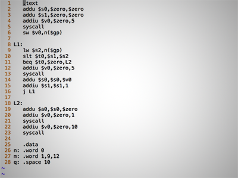
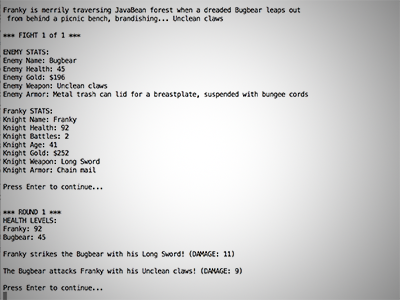
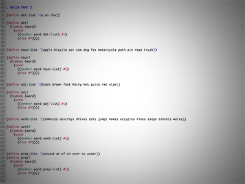
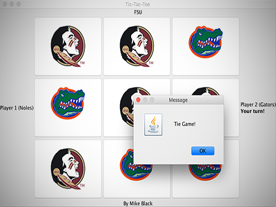

Projects Readability Checker for Salesforce This is an Apex class that plugs into Salesforce Knowledge Management. Flesch-Kincaid (FK) readability analysis: Scans the characters in the text and counts the number of words, syllables and sentences in order to determine the readability. Risk check: Scans for items that should remain confidential and should not be exposed in a public article. Style check: Scans for items that do not conform to the Knowledge Management style guidelines. Note: This demonstration is from my personal Salesforce development environment and does not include any confidential information. The example is from publicly-available article. Cache Simulator This program simulates a memory cache based on a source file provided to it. It prints a report based on its activity. MIPS Assembler  This program is a simple MIPS assembler. It takes MIPS commands and converts them to object code Sir Javalot  This is a silly "Dungeons & Dragons"-like game that allows the user to create a character and battle with various randomly-generated monsters Lambdas with Scheme  Scheme is a Lisp-based language that was developed at MIT. It's useful for "functional programming" as opposed to the more-familiar "imperative programming." Music Curator Database Design Here's a (somewhat lengthy, sorry) overview of a database design for a fictional record label that needs to keep track of its releases. Tic-Tac-Nole  Here's a simple, Nole-vs-Gator themed game of Tic-Tac-Toe to keep you busy during the football off-season. Automat - Mobile apps "made-to-order" This is a graphics design project where I created a brand identity for a fictional tech startup. "Automat” is named after a kind of fast food restaurant where the walls are filled with vending machine-like slots with ready-made meals. It’s not common in the USA anymore, but I think they are still found in other countries.